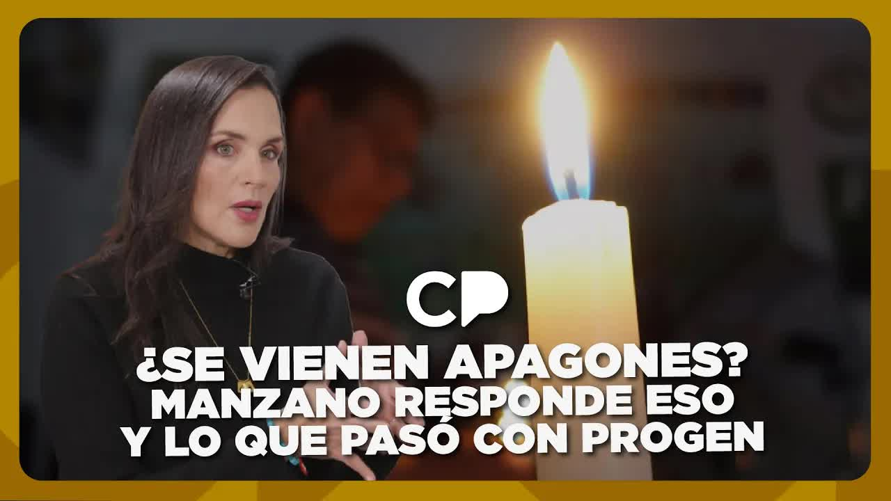
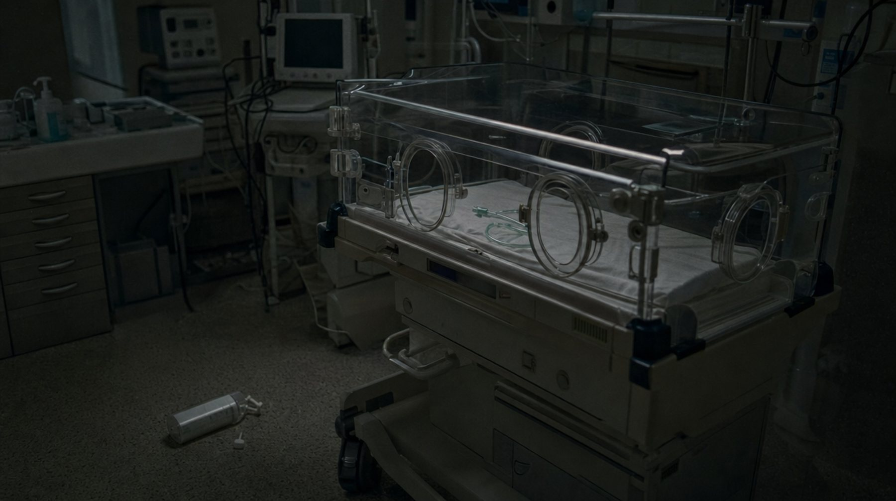
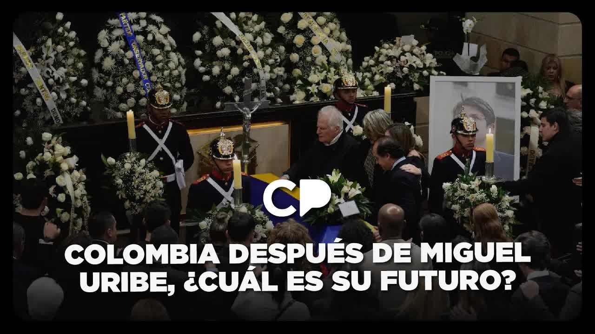

12 ago 2025 · Café · La muerte de 12 bebés en el Hospital Universitario
El viernes 8 de agosto de 2025 Andersson Boscán contó que 18 recién nacidos habían muerto en el Hospital Universitario de Guayaquil y que en la sala se reutilizaban cánulas. El hospital lo negó por comunicado y el Ministerio de Salud se lo negó a los periodistas. Un día después el Ministerio reconoció 12 muertes y admitió que dos fueron por la bacteria KPC. El gerente fue despedido, la coordinadora zonal removida, la Fiscalía abrió una investigación previa y la Asamblea empezó a fiscalizar. Una semana después el buzón de WhatsApp del periodista se llenó de médicos, enfermeras y familias contando lo mismo en otros hospitales.

El viernes 8 de agosto de 2025, en su columna de Café La Posta, Andersson Boscán contó que 18 neonatos habían muerto en el Hospital Universitario de Guayaquil y que la causa estaba en la propia sala: se habían reutilizado cánulas. La respuesta oficial llegó ese mismo día. El hospital publicó un comunicado negando la noticia. El Ministerio de Salud Pública se la negó a los periodistas que llamaron a preguntar si era verdad. Desde la dirección de comunicación del Ministerio desmintieron el reportaje.
Un día después el Ministerio cambió de versión. Confirmó la muerte de 12 recién nacidos, dijo que estaba investigando y mandó a hacer una auditoría para establecer la causa. La versión oficial sostuvo que no se trataba de un desabastecimiento sino de otro tipo de situaciones. El caso se volvió el tema del que hablaba el país. El martes 12 de agosto, en medio de la marcha del Gobierno contra la Corte Constitucional, los comentarios del programa pedían una palabra de consuelo para los padres de los bebés.
No era la primera vez que ese hospital aparecía en una investigación de Boscán. En 2019, en la serie Ministerio de la Muerte, La Posta publicó un informe interno que contaba 46 muertes neonatales evitables en el Hospital Universitario de Guayaquil entre la semana 1 y la 18 de 2018, contra 71 en todo el año anterior. Aquella serie terminó con la salida de la ministra Verónica Espinosa y con su censura en la Asamblea. Siete años después, la misma sala de neonatología volvía a contar muertos.
Dieciocho recién nacidos muertos y cánulas de oxígeno reutilizadas en la sala de neonatología.
El hospital niega la denuncia por comunicado y el Ministerio la desmiente ante los periodistas.
Un día después del desmentido, el Ministerio confirma doce muertes y anuncia una auditoría.
La Presidencia reconoce dos neonatos muertos con la bacteria. La Fiscalía abre investigación previa.
El gerente del hospital es despedido y la coordinadora zonal, removida. La Asamblea abre su propia investigación.
Para el 12 de agosto la reacción del Estado ya tenía forma. El hospital reconocía 12 neonatos muertos y decía que solo dos, en teoría, habían muerto por la bacteria. La vocera de Carondelet, Carolina Jaramillo, confirmó ese día que dos neonatos murieron con KPC. La Fiscalía inició una investigación previa por la muerte de los 12 bebés. El ministro de Salud, Jimmy Martin, confirmó en sus redes el despido del gerente del Hospital Universitario y anunció atención psicológica para los padres. La Asamblea Nacional abrió un proceso de fiscalización en la Comisión de la Niñez.
El gerente despedido, según Boscán, había informado por escrito a la coordinadora zonal del Ministerio que había una situación de infecciones en el área de neonatología. La coordinadora zonal también fue removida. Humberto Plaza, recién nombrado gobernador del Guayas, fue al hospital y envió fotografías para mostrar que estaba completamente equipado. El alcalde de Guayaquil, Aquiles Álvarez, dijo que si necesitaban dinero para una cánula se lo pidieran. Plaza le respondió que no se trataba de eso. El cruce entre gobernador y alcalde resumió la discusión pública de esa semana.
Yo me ratifico en que no son 12, son 18.
Andersson Boscán, 12 de agosto de 2025
Boscán no aceptó la cifra oficial. Dijo que estaba revisando documentación para mostrar que en el último mes había muerto una cantidad desmesurada de neonatos en el Hospital Universitario, muy probablemente por infecciones asociadas a la atención médica, las llamadas infecciones nosocomiales. Y fue más allá: el equipo sospechaba que no era la primera vez ni el único hospital, y creía haber encontrado documentos que probaban que se estaban escondiendo muertes de neonatos disfrazadas bajo otras categorías.
Su pedido fue concreto. El Ministerio había removido al gerente y a la coordinadora zonal, la Fiscalía había abierto la investigación, la Asamblea fiscalizaba y el propio Ministerio había iniciado una investigación interna. Lo que faltaba era ir a las historias clínicas: en los certificados de defunción los médicos anotan una generalidad, sepsis o paro, y solo la historia clínica de cada paciente permite saber cuáles tenían cuadros infecciosos y bacterianos.
Esas madres y esos padres merecen verdad. El país merece verdad. Todos aquellos que pagan impuestos y van a un hospital merecen ser curados y no salir en condición de cadáver porque alguien no tuvo los reparos suficientes de mantener la asepsia que merece un hospital.
Andersson Boscán, 12 de agosto de 2025
Después de la denuncia, Boscán cambió la configuración de sus redes: a quien le escribía por interno le llegaba un mensaje con su número y su correo para enviar información de forma confidencial. La columna del 14 de agosto de 2025 fue la reproducción de ese buzón en un solo día. Estaba lleno de médicos, enfermeras, internos, residentes y usuarios del sistema. Mónica Velásquez, que compartía el viaje con él, lo escuchaba, lo regañaba cuando respondía con frialdad y le pedía atender a la gente con más humanidad.
La primera nota de voz llegó a las 6:50 de la mañana. Una mujer contaba que su pareja había muerto el domingo 10 de agosto en el Hospital Carlos Andrade Marín de Quito, después de 31 días en terapia intensiva. Una prueba de secreción traqueal confirmó que la bacteria era la KPC, la misma que afectó a los neonatos de Guayaquil. La prueba la pagó ella, porque el hospital no tenía un área de microbiología funcionando. Los documentos que le entregó el hospital decían que su pareja había muerto de otra cosa, una generalidad, una sepsis.
Una enfermera del Hospital del Guasmo reportó que no tenían povidona, el desinfectante con que se limpian la piel y los instrumentos antes de una cirugía; que lavaban los instrumentos con agua y que no había jabón para lavarse las manos antes de operar. Una trabajadora del hospital Monte Sinaí escribió que tenían prohibido mandar a los pacientes a comprar lo que faltaba, para cuidar la imagen de un hospital que no tenía nada. Un trabajador de limpieza del hospital de Playas llevaba siete meses sin cobrar.
Una fuente del Ministerio de Salud en Guayas contó que Michelle Jiménez, la coordinadora zonal que no hizo nada por los neonatos del Hospital Universitario, había sido integrada ese día a un nuevo puesto y recibida con flores azules. Y una exauditora de negligencias médicas del Hospital Teodoro Maldonado Carbo de Guayaquil, despedida cuando empezó a investigar y con una orden judicial de reintegro que no se cumplía, describió un patrón en las unidades de cuidados intensivos de neonatología: a todo niño que ingresa con 900 gramos o menos lo registran como óbito fetal, como si hubiera nacido muerto, o le ponen una causa genérica que no meta en problemas a nadie.
A las 20:30 escribió una médica joven del Hospital del Guasmo Sur. Hacía un año, cuando era interna, había visto morir recién nacidos uno detrás de otro, todos con KPC. No había aire acondicionado, el calor convertía la sala de partos en un caldo de cultivo y las cesáreas se hacían en quirófanos hirviendo, sin control de asepsia. Dejó de contar cuando llegaron a diez. Fueron decenas, dijo. Nadie lo investigó. Nunca salió en las noticias.
Aquí la gente no se muere por enferma, sino por pobre.
Médica del Hospital del Guasmo Sur, citada por Andersson Boscán el 15 de agosto de 2025
La conclusión de la columna fue una sola: el sistema de salud estaba en terapia intensiva y los políticos, según fueran oficialismo u oposición, pensaban en disimular el problema o en exagerarlo. Boscán propuso quitarles el micrófono a los políticos y ponérselo a los médicos, a quienes les piden resolverlo todo sin recursos y, sobre todo, quedarse callados.
El 15 de agosto el médico salubrista Esteban Ortiz, de la Universidad de las Américas, explicó en Café La Posta lo que se sabía del brote. La KPC es una Klebsiella pneumoniae productora de carbapenemasas, una bacteria hospitalaria multirresistente de las que habitan en las terapias intensivas. Ecuador ya había tenido un brote por Enterobacter cloacae en 2024. En los informes sobre los dos neonatos reconocidos oficialmente, Ortiz identificó una demora en el procesamiento de los hemocultivos y la ausencia de un infectólogo de planta permanente en el hospital.
Sobre el punto donde se rompió el protocolo, Ortiz enumeró las hipótesis que la investigación debía resolver: que no se limpiaron los quirófanos, las terapias neonatales o las termocunas; que se reutilizaron cánulas de alto flujo, que son más costosas; o que el personal de guardia no se lavó las manos ni guardó la asepsia al pasar de un paciente a otro. Detrás puso una cifra: en los últimos cuatro años el presupuesto de salud se redujo en más de 400 millones de dólares, y uno de los rubros afectados fue el de los servicios tercerizados de limpieza.
Es un brote que no se tiene que dar en un sistema hospitalario en el siglo XXI.
Esteban Ortiz, médico salubrista, 15 de agosto de 2025
Ese mismo día el asambleísta Luis Fernando Molina, de la Revolución Ciudadana, contó lo que había visto en recorridos por los hospitales de Mejía y Rumiñahui: personal de alimentación, guardias y limpieza con seis a ocho meses sin cobrar, y directores que intercambian medicinas a punto de caducar entre hospitales para cubrir faltantes. Su compañera Viviana Veloz buscaba información en la Comisión de Salud sobre la muerte de los bebés del Hospital Universitario. Molina pidió la comparecencia del ministro de Salud ante la Comisión de Garantías Constitucionales: llevaba 50 días sin respuesta a sus pedidos de información.
El diagnóstico coincidía desde orillas distintas. El asambleísta oficialista Adrián Castro había admitido tres días antes, a pregunta de Boscán, que en dos años de gobierno habían pasado cinco ministros por el área de salud y la gente seguía sin medicamentos. Ortiz lo puso en términos de gestión: con cinco ministros en 18 meses ningún funcionario firma procesos de compra millonarios, no se compran insumos ni medicamentos y todo termina en la atención que recibe la gente.
En una semana la denuncia produjo lo que el Estado suele tardar meses en hacer. El hospital y el Ministerio pasaron de negar las muertes a reconocer 12 y admitir dos por KPC. El gerente del Hospital Universitario, que había advertido por escrito de las infecciones, fue despedido. La coordinadora zonal fue removida y reubicada. La Fiscalía abrió una investigación previa, el Ministerio una auditoría interna y la Asamblea un proceso de fiscalización en la Comisión de la Niñez, con pedidos de información en la Comisión de Salud.
Lo que no se resolvió fue la cifra. La investigación sostiene que son 18 muertos, no 12, y que las historias clínicas dirían cuántos tenían cuadros infecciosos que los certificados de defunción esconden bajo sepsis o paro. Los testimonios del buzón de WhatsApp señalaron el mismo mecanismo en otros hospitales: recién nacidos registrados como óbitos fetales, decenas de neonatos muertos con KPC en el Guasmo Sur sin que nadie lo investigara, un paciente muerto por KPC en Quito con un certificado que decía otra cosa. Ninguna de esas denuncias tenía, al 15 de agosto de 2025, una investigación abierta.
El sistema de salud está en terapia intensiva y los políticos no están pensando en cómo darle vida, están pensando en disimular el problema o en exagerar el problema, según si son oficialismo u oposición.
Andersson Boscán, 15 de agosto de 2025
Actualizado el 5 de septiembre de 2026
La serie Ministerio de la Muerte publica un informe interno con 46 muertes neonatales evitables en el Hospital Universitario en 18 semanas de 2018.
Boscán denuncia 18 neonatos muertos y cánulas reutilizadas. El hospital lo niega por comunicado; el Ministerio, ante los periodistas.
Un día después de desmentir, el Ministerio de Salud confirma la muerte de 12 recién nacidos y anuncia una auditoría.
Un paciente muere en el Hospital Carlos Andrade Marín tras 31 días en terapia intensiva. Su pareja paga la prueba que confirma la KPC.
Carondelet reconoce dos neonatos muertos con KPC. Fiscalía abre investigación previa. El ministro Jimmy Martin confirma el despido del gerente. Boscán se ratifica en 18.
La Comisión de la Niñez inicia un proceso de fiscalización. La coordinadora zonal es removida.
Boscán reproduce en su columna los mensajes de médicos, enfermeras y familias de otros hospitales.
Esteban Ortiz detalla el brote. Luis Fernando Molina pide la comparecencia del ministro de Salud.
Ministro de Salud Pública. Confirmó en sus redes el despido del gerente del hospital y anunció atención psicológica para los padres.
Había informado por escrito a la coordinación zonal sobre las infecciones en neonatología, según Boscán.
Coordinadora zonal del Ministerio de Salud. Recibió el informe del gerente. Una fuente del Ministerio dijo que no hizo nada por los neonatos.
Vocera de Carondelet. Reconoció que dos neonatos murieron con KPC.
Gobernador del Guayas, recién nombrado. Visitó el hospital y envió fotos de que estaba equipado.
Alcalde de Guayaquil. Ofreció dinero para cánulas si el hospital lo necesitaba.
Asambleísta de la Revolución Ciudadana. Pidió información en la Comisión de Salud sobre la muerte de los bebés.
Médico salubrista de la Universidad de las Américas. Explicó el brote y los protocolos rotos.
Negó la noticia por comunicado el mismo día de la columna. Después reconoció 12 neonatos muertos y dijo que solo dos, en teoría, murieron por la bacteria.
Su dirección de comunicación desmintió el reportaje ante los periodistas. Un día después confirmó la muerte de 12 recién nacidos, dijo que no se debía a desabastecimiento y ordenó una auditoría.
Reconoció el 12 de agosto de 2025 que dos neonatos murieron con la bacteria KPC.
Confirmó en sus redes el despido del gerente del hospital y anunció atención psicológica para los padres, entre otras medidas.
Visitó el hospital y envió fotografías de que estaba completamente equipado. Al alcalde le respondió que el problema no era dinero para una cánula.
Dijo que si el hospital necesitaba algo, incluso dinero para una cánula, se lo pidieran.


¿Sabes quién creo que ha venido a la marcha? Eh, bienvenidos todos. ¿Sabes quién creo que venido la marcha? El señor Jorge Romero, después de tanto tiempo lo veo en el set de Café La Posta y yo creo que vino a la marcha. Jorge Romero está en la posta. Sí, señor. Este, me da un poco de miedo esto. Siento que la última vez que llegó Jorge despidieron a alguien o pasan cosas bonitas, ¿no? Seguramente van a despedir gent…
Leer la transcripción completafilo de la cama, con la Moni todavía dormida a escuchar a Lucía. Su esposo murió por KPC, la bendita y [ __ ] bacteria eh que afectó también a los neonatos en el hospital eh universitario de la ciudad de Guayaquil. Murió el 10 de agosto de 2025. Yo miro el calendario porque soy muy despistado. Son 4 días, 4 días apenas, desde que Lucía ha perdido a su esposo. Entonces, entiendo el llanto. Es un llanto fresc…
Leer la transcripción completaTranscripciones de los subtítulos automáticos de cada programa. No están corregidas a mano: sirven para buscar una frase y llegar al minuto exacto del video, no como cita textual literal.
Gerente despedido, coordinadora zonal removida. Fiscalía, Ministerio de Salud y Asamblea abrieron procesos. Ninguno había concluido al cierre de los programas.
El Estado reconoce 12 muertes y dos por KPC. La investigación sostiene que son 18 y que hay muertes de neonatos escondidas bajo otras categorías.
Este expediente reconstruye el caso a partir de los programas del 12 y 15 de agosto de 2025. La columna original del 8 de agosto de 2025 no está entre los videos incluidos. Los familiares y las fuentes del buzón de WhatsApp se reproducen sin nombre. El antecedente de 2018 proviene del expediente Ministerio de la Muerte, publicado en 2019.